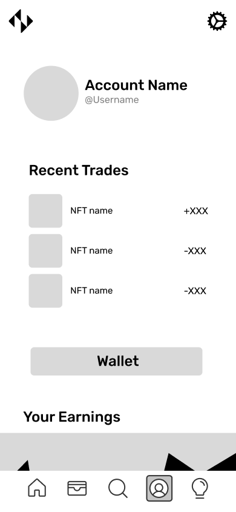
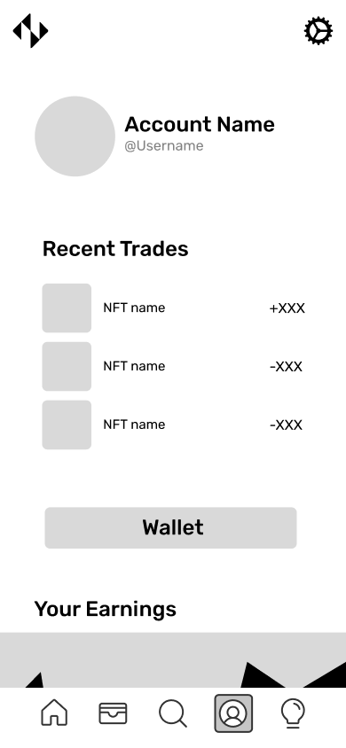

Iterative Design:
NFTScoringNFTScoring is an NFT trading platform with the goal of giving NFT investors all the information needed in order to make smart decisions when buying or selling NFTs. Anyone can use a free account, but there is also a premium version for users to gain more access.
In this group project, we designed a mobile app for the platform using an iterative user-testing process to incorporate feedback into our final product. We expect our app to serve users within a range between beginners and moderately knowledgable about NFTs. The aim is to create a product that is easy to navigate for users who are new to NFT trading.
Sketching
We came up with four different possible designs for the app. Each design imagines a different user flow through a unique organization of components for the app.
Wireframing
Combining the best features of each sketch, we developed one coherent layout for the app's pages. The main flow of the app includes a "Home" page with a newsfeed, a "Wallet" page showing the user's current assets, a "Discover" page to serach for specific NFT's, and a "Learn" page with information about NFT trading and the app itself.
 


Hi-Fi
We then fleshed out the wireframes into a hi-fi interactive prototype.
Critique
We asked a group of peers to review our mockup and provide feedback on the interface. The feedback we received can be summarized by the following categories:
User Testing
We conducted a remote usibility test using the service User Testing. Users received the following instructions before interacting with the protoype:
"Imagine you are using a user of NFTScoring who wants to explore new NFTs that you may not have seen before. Navigate through the app until you find a popup for a trending NFT. Please think out loud with any thoughts that come to your head as you navigate through our site to help us understand your thinking!"
Click on any of the below images to watch each user interact with the protoype:

Conclusions
- We made the decision to include the "discovery" page as part of the "search" page that is indicated by a search bar icon tab. However, users were initially confused and thought the homepage is where they would find "new NFTs".
- Once they did figure out that the homepage was a social page, they navigated to the "search" page to find a new NFT, as the task asks them to do. However, users spent time figuring out what the difference was between the search bar on top and advanced search.
- In general, users were able to talk through and understand the "discovery" page as the place to explore new NFTs. However, a user who had to look up what an NFT is was really confused and did not even try to understand the statistics that show up. This indicates that we could have made our design more explicit for NFT newcomers.
- When the user who did not know what the NFT was read the task, they said that they did not know what an NFT was and looked at the top right corner of the homepage for a "question mark icon". However, they found it later in the bottom right corner. To make people unfamiliar with NFTs more comfortable, we could have included a tutorial or tips as the user enters the app.
- After arriving to the "discovery" page, users understood that the search bar on top was for them to enter any keyword to find relevant NFTs and the sections below were other ways of exploring new NFTs like the "trending" section.
Email to NFTScoring founders
As part of our last task, we reached out to the NFTScoring founders to let them know about our assignment, explain our design choices and invite them to look at our Figma.
Hello NFTScoring founders,
I am XXXXX, a student at Brown University. My peers (cc’d in this email) – XXXX, XXXX, XXXX – and I were tasked to design mockups for a YCombinator startup as an assignment for our UI/UX course. We chose NFTScoring because we are super interested in your vision of giving people superpowers to understand the NFT markets!
As part of the assignment, we came up with NFTScoringapp designs without looking at any of the interfaces you have built, coming up with designs solely based on NFTScoring's description on the YC webpage. Our design intention was to build a platform that made information about NFTs accessible to the general public that might be intimidated by the new technology. A problem that we came across when doing this was that there is an overwhelming amount of information on the NFT market for a smaller mobile screen to display. To mitigate this issue, we intentionally included a lot of whitespace on our mockups and organized the app into five distinct pages with their own purposes.
We also wanted to add a social aspect to the platform since the NFT market is very community-driven. A social feed is included as the first page users will see; we did this because it is a great way to promote trading and provides a feature that cannot be found in most NFT market platforms. A social network for NFTs would be valuable for newcomers to learn more about the market, for experts to build their brand by promoting their knowledge, and for the NFT community as a whole to have a collaboration hub.
Thank you for taking the time to read this! If you have the time, we would appreciate it if you would look at our Figma for the mockups (linked here). You can also step through an interactive prototype by pressing the play button in the top right corner.
The four of us are excited to see where NFTScoring goes and wish you the best on your journey.